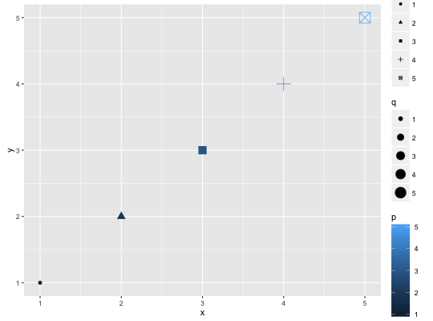
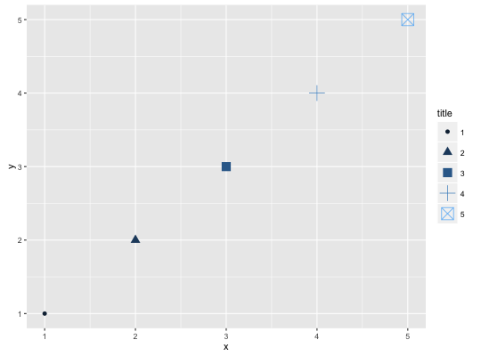
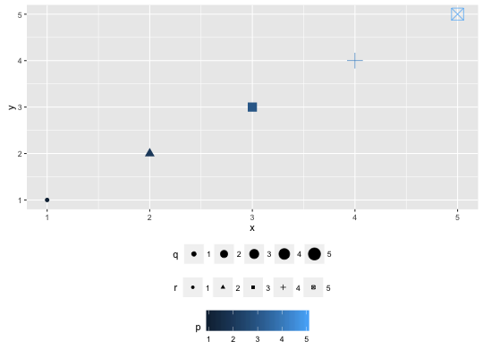
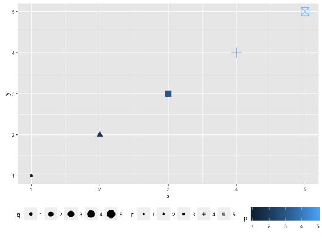
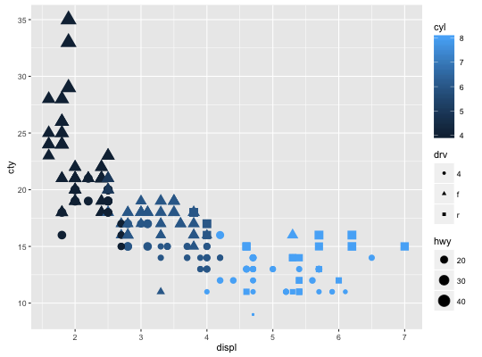

Set guides for each scale.
Usage
guides(...)
Arguments
- ...
- List of scale guide pairs
Value
-
A list containing the mapping between scale and guide.
Description
Guides for each scale can be set in call of scale_* with argument
guide, or in guides.
Examples
# ggplot object dat <- data.frame(x = 1:5, y = 1:5, p = 1:5, q = factor(1:5), r = factor(1:5)) p <- ggplot(dat, aes(x, y, colour = p, size = q, shape = r)) + geom_point() # without guide specification p
# Show colorbar guide for colour. # All these examples below have a same effect. p + guides(colour = "colorbar", size = "legend", shape = "legend")
p + guides(colour = guide_colorbar(), size = guide_legend(), shape = guide_legend())
p + scale_colour_continuous(guide = "colorbar") + scale_size_discrete(guide = "legend") + scale_shape(guide = "legend")# Guides are integrated where possible p + guides(colour = guide_legend("title"), size = guide_legend("title"), shape = guide_legend("title"))
# same as g <- guide_legend("title") p + guides(colour = g, size = g, shape = g)p + theme(legend.position = "bottom")
# position of guides p + theme(legend.position = "bottom", legend.box = "horizontal")
# Set order for multiple guides ggplot(mpg, aes(displ, cty)) + geom_point(aes(size = hwy, colour = cyl, shape = drv)) + guides( colour = guide_colourbar(order = 1), shape = guide_legend(order = 2), size = guide_legend(order = 3) )